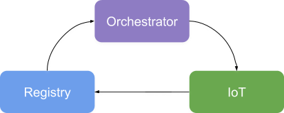

class: center, middle # Erlang Distribution Protocol ## Interoperability made easy --- class: middle # Agenda 1. Who am I? 2. Motivation 3. Erlang to the rescue 4. Erlang Distribution Protocol 5. Example 6. Caveats --- class: middle # Who am I? * Filipe Cabaço * Volkswagen Digital Lab: Lisbon * @filipecabaco in <img src="twitter.png" style="width:20px;"/> & <img src="github.png" style="width:20px;"/> --- class: middle # Motivation * Libraries / Features from other languages * Easier to solve in other language --- class: middle # Erlang to the rescue * NIFs - Can be dangerous * Ports - Lower level There's another option... --- class: middle # Erlang Distribution Protocol * Contract to be recognized has an Erlang node * Contract to authenticate has an Erlang node * Contract to communicate has an Erlang node * Contract to translate Erlang Structures Existing libraries: JInterface(JVM), Pyrlang(Python), node(Go), erl_dist(Rust) --- class: middle # Erlang Distribution Protocol #### Why is it "better" ? * Everything becomes an Erlang node! * Everything uses messages! --- class: middle, center # Our example  --- class: middle # How to achieve it in Elixir? --- class: middle ##### Connect to EPMD ``` elixir use GenServer def init(_), do: {:ok, []} def start_link(_) do "orchestrator_#{UUID.uuid4()}@localhost" |> String.to_atom() |> Node.start(:shortnames) Node.set_cookie(:secret) GenServer.start_link(__MODULE__, [], name: __MODULE__) end ``` --- class: middle ##### Select connected node ``` elixir defp select_worker() do {:ok, names} = :net_adm.names() # names |> Enum.map(&(elem(&1, 0))) |> Enum.map(&List.to_string/1) |> Enum.filter(&(String.starts_with?(&1, "iot_"))) |> Enum.random end ``` --- class:middle ##### Connect to selected Node ``` elixir defp connect_to_worker() do node = :"#{select_node()}@localhost" true = Node.connect(node) :pong = Node.ping(node) {:ok, node} end ``` --- class:middle ##### Send message to selected Node ``` elixir def handle_call({:msg, message}, _sender, _state) do {:ok, node} = connect_to_worker() send({:mailbox, node}, to_charlist(message)) {:reply, :ok, []} end ``` --- class: middle # How to achieve it in the JVM? --- class: middle ##### Connect to EPDM / Create Mailbox / Receive messages ``` clojure (let [ id (.toString (java.util.UUID/randomUUID)) node (OtpNode. (str "iot_" id "@localhost")) _ (. node setCookie "secret") mailbox (. node createMbox "mailbox")] (go (loop [] (prepared-mqtt-handle-pub (<! chan-receive)) (recur))) ``` --- class: middle ##### Translate message ``` clojure (defn mqtt-handle-pub [mqtt-client message] (let [ value (. message stringValue) to-publish (. value getBytes)] (. mqtt-client publish topic to-publish 0 false) (println (str "Published " value)))) ``` --- class: middle # Possible issues * Single point of failure (EPDM) * No secure connection (TLS option exists) * No automatic reconnection * JVM well supported, other languages not so much --- class: middle ## Thank you!